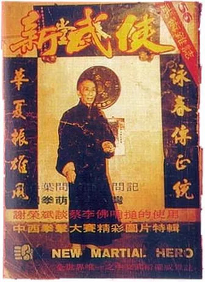

Entrevista com Yip Man
Entrevista concedida a Mok Pui à revista Novo Herói nº 56 (Tradução por Thomas Pinheiro)
A entrevista original para a revista Novo Herói Marcial, editada em Hong Kong entre os anos de 1960 a começo de 1980: diferença entre os estilos Weng Chung e Wing Chun; pensam que estes dois clãs são apenas o mesmo estilo do kung fu usando dois nomes diferentes. Engano, o estilo Wing Chun é completamente diferente do estilo de Weng Chun. Em Hong Kong, o líder do clã Wing Chun (na época da entrevista) é o Grande mestre Yip Man, e o líder do clã de Weng Chun é o Grande mestre Chu Chung.
As técnicas e as formas (kuen toes) são completamente diferentes. A razão entre estes dois estilos é percebida como ser o mesmo estilo é por apresentarem algumas técnicas em comum, embora alguns dos conceitos sejam diferentes.
Por exemplo, ambos aplicam retirada de força ou circulo com as mãos, ambos exercem socos de uma polegada. O Noi-lim-sau é uma técnica para que um praticante inicie na área interna do seu oponente para a parte externa. Esta técnica exige a postura de cotovelo e um movimento de circundamento muito pequeno. Consequentemente é uma técnica muito rápida do contra-ataque. Dois estilos diferentes da mesma fonte. O grande mestre Yip era um nativo de Fatshan.
Quando era muito novo, era completamente fraco. Consequentemente, seus pais enviaram-no para aprender Wing Chun de Chan Wah Shun, o estudante mais proeminente do famoso Dr. Leung Jan. Quando o grande mestre Yip descreveu seu passado, ele fêz assim com grande emoção.
Está aqui um segmento da entrevista em seu formato original: Novo Herói Marcial: "O apelido de Chan Wah Shun indica que Wah o trocador de dinheiro era uma pessoa moderada muito má que gostava de lutar todo o tempo, correto? Quantos estudantes Wah o trocador de dinheiro teve? Como você foi classificado entre seus irmãos do kungfu?" Yip Man: " Incluindo eu, Wah Shun admitiu somente 16 estudantes desde a abertura de sua escola de kungfu. Eu tinha 11 anos quando eu me tornei estudante durante seu último ano."
"Herói Marcial Novo: "Nós chineses temos um provérbio que o último filho é o mais amado. De acordo com o costume chinês, desde que você era seu último filho do kungfu de Wah Shun, você deve ter sido o estudante mais amado dele. Correto? " Yip Man, sorrindo: " Você está correto. Quando eu aprendi com Wah Shun, ele tinha 70 anos. Eu era um bocado fraco naquele tempo. Entretanto, ainda corrigiu meus erros com grande paciência. Mais tarde, igualmente disse seus outros estudantes para ensinar-me. Em consequência, minhas técnicas melhoraram nos apectos da alta velocidade."
Herói marcial novo: "É uma boa pergunta. Deixe-me dizê-lo porque. Antigamente, os povos eram muito restritos a respeito do relacionamento do professor/estudante. Antes de admitirem um estudante, tiveram que saber o caráter deste estudante em potência muito claramente. Este é o que é chamado de o mestre escolhe o discipulo. Em segundo lugar, igualmente dependeu sobre se o estudante poderia ter recursos para pagar o valor das aulas ou não. O grande mestre Yip Man parou por algum tempo. Falou então em um tom um pouco baixo: "O fato é, não há muitos que possam pagar por uma mensalidade de um ótimo colégio. Por exemplo: então eu paguei, o “envelope vermelho" para ser admitido como discipulo, contendo 20 taels da prata. E eu tive que pagar 8 taels da prata por mês como minha mensalidade de treino. Muito dinheiro para aprender Kungfu"
Herói marcial novo: " Quanto era 20 taels do valor de prata, nos termos de seus padrões vivos? (No final dos anos 60)" Yip Man, após pensar um pouco: "Para 20 taels de prata que você poderia casar. Também, com uma metade da prata você poderia comprar 1 produção de arroz. "O Grande mestre continuou:" Isso era porque, naquele tempo, a maioria das pessoas que aprenderam o kungfu eram ricas. Estas pessoas poderiam deixar seus trabalhos e viver nos templos velhos em montanhas afastadas para o treinamento. Não é o mesmo que hoje quando as pessoas podem facilmente aprender o kungfu em qualquer esquina."
Encontrando Leung Bik em Hong Kong após seis meses, um colega de Yip Man, apelidado Lai, cujo pai dirigiu uma companhia grande de seda nomeada "Companhia Kung Hung de Seda", na rua de Jervois de Sheung Wan, falou a Yip que havia um amigo de seu pai em sua casa. Estava em seus 50 anos. Este homem sabia algumas técnicas de kungfu. Ofereceu sparring amigável com Yip Man. Yip naquela época nunca tinha sido derrotado, e assim não desperdiçou nenhum tempo em aceitar o desafio.
Lai foi nomeado para apresentar um ao outro em uma tarde de domingo. Nesse domingo, Yip foi à casa de seu colega. Após a introdução a este homem de meia idade, Yip olhou-o com desprezo. Para Yip vendo-o, olhou mais como um magro cavalheiro típico do que alguém que soube-se realmente o kungfu. Após um rápido momento, Yip Man desafiou de forma direta o homem a uma luta.
Com um sorriso, o homem de meia idade disse: "Bem, Yip Man, assim que você estiver interessado em fazer algum sparring comigo. Não se preocupe em utilizar sua luta em mim (afirmou para não se preocupar sobre ele). Tudo que você precisa fazer é me atacar em qualquer parte de meu corpo com toda sua força!" Ao ouvir isto, o arrogante Yip Man, embora aparentemente ainda não invocado, era realmente tão encrenqueiro que tudo que quis fazer foi bater acima daquele homem! Sem esperar mais, logo o homem de meia idade não se fez de desentendido, fazendo um sinal com a mão, convidando Yip Man a atacar.
Yip desferiu uma chuva agressiva e perfuradora de ataques ao homem. Entretanto, este homem era tão rápido que Yip Man não poderia combinar seus movimentos do contra ataque. Em um instante, Yip Man foi forçado a retirar-se em um canto. O homem parou no mesmo momento. Depois que do primeiro encontro, e já derrotado, Yip Man não poderia acreditar que este homem tinha ganhado as vantagens tão rapidamente. Consequentemente, perguntou ao homem se poderia tentar outra vez.
Mais uma vez, Yip Man foi controlado completamente por este homem. Não poderia fazer qualquer coisa de encontro a ele! Desta vez, Yip Man soube que tinha sido batido certamente por um perito real de kungfu. Sem dizer uma palavra, Yip Man partiu com grande desapontamento. Em seguida que terminou o sparring amigável, Yip Man ficou tão deprimido que não ousou mesmo mencionar que sabia kung fu.
Uma semana mais tarde, Yip soube de Lai que o homem de meia idade queria vê-lo outra vez. Naquele momento, Yip Man estava um pouco receoso e demasiado humilhado para ver outra vez o homem de meia idade. Segurando a Lai: "Eu sinto demasiado embaraçado para vê-lo outra vez. Eu não estou para lutar a toda hora." Entretanto, para surpresa de Yip Man, Lai disse a Yip que o amigo do seu pai elogiou realmente as técnicas do kungfu de Yip Man.
Isso era porque quis ver Yip outra vez e lhe falar pessoalmente. Lai começou a dizer para Yip Man o segredo do amigo do seu pai. De fato a pessoa que tinha lutado com Yip Man era ninguém mais que Leung Bik, filho do Dr. Leung Jan! Após saber a verdade, Yip Man exclamou: "Deus! Por isso é que é tão bom em técnicas do kungfu. Realmente desta vez eu estava lutando com elevado perito de Wing Chun!" Yip Man imediatamente percebeu que isto era uma oportunidade. Não era ainda não fosse altamente hábil nas técnicas do kungfu ensinadas por seu sifu Wah o trocador de dinheiro.
Esta seria a melhor possibilidade para que aprendesse as técnicas mais avançadas do Wing Chun. Consequentemente, não desperdiçou nenhuma hora em pedir a Lai, seu colega, para leva-lo à Companhia Kung Hung de Seda para encontrar Leung Bik. Desde que Yip Man era um gênio nos termos de aprender o kungfu, Leung Bik estava muito feliz em ensinar tudo que sabia para Yip Man.
Alguns anos mais tarde Leung Bik, cansado da vida em Hong Kong, estava pensando voltar a Fatshan. Yip Man naquele momento tinha alcançado já a proficiência, o mais elevado nível em técnicas de kungfu.